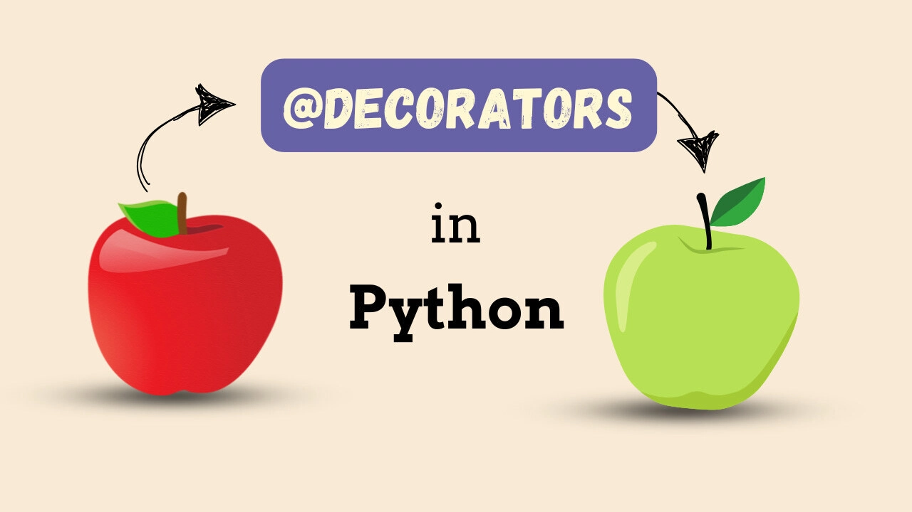

Python Decorators: A Complete Guide with Useful Examples

Python decorators are one of the most powerful and elegant features of the language. They allow you to modify or enhance the behavior of functions, methods, or classes without permanently altering their structure. This article explores decorators from the ground up and presents several useful decorators you can implement in your projects.
Understanding Decorators
At its core, a decorator is a function that takes another function as an argument and returns a modified version of that function. Decorators leverage Python’s first-class functions, where functions can be assigned to variables, passed as arguments, and returned from other functions.
Basic Decorator Structure
def my_decorator(func):
def wrapper(*args, **kwargs):
# Code to execute before the original function
result = func(*args, **kwargs)
# Code to execute after the original function
return result
return wrapper
# Using the decorator
@my_decorator
def my_function():
print("Hello, World!")The @my_decorator syntax is equivalent to writing my_function = my_decorator(my_function).
Essential Decorator Patterns
1. Timing Decorator
This decorator measures how long a function takes to execute, perfect for performance monitoring.
import time
import functools
def timer(func):
@functools.wraps(func)
def wrapper(*args, **kwargs):
start_time = time.time()
result = func(*args, **kwargs)
end_time = time.time()
print(f"{func.__name__} took {end_time - start_time:.4f} seconds")
return result
return wrapper
@timer
def slow_function():
time.sleep(1)
return "Done!"
# Usage
slow_function() # Output: slow_function took 1.0041 seconds2. Retry Decorator
Automatically retries a function if it fails, useful for network requests or unreliable operations.
import functools
import time
import random
def retry(max_attempts=3, delay=1):
def decorator(func):
@functools.wraps(func)
def wrapper(*args, **kwargs):
for attempt in range(max_attempts):
try:
return func(*args, **kwargs)
except Exception as e:
if attempt == max_attempts - 1:
raise e
print(f"Attempt {attempt + 1} failed: {e}. Retrying in {delay} seconds...")
time.sleep(delay)
return wrapper
return decorator
@retry(max_attempts=3, delay=0.5)
def unreliable_function():
if random.random() < 0.7: # 70% chance of failure
raise Exception("Random failure")
return "Success!"
# Usage
result = unreliable_function()
print(result)3. Cache/Memoization Decorator
Caches function results to avoid expensive recalculations for the same inputs.
import functools
def memoize(func):
cache = {}
@functools.wraps(func)
def wrapper(*args, **kwargs):
# Create a key from arguments
key = str(args) + str(sorted(kwargs.items()))
if key not in cache:
cache[key] = func(*args, **kwargs)
print(f"Cached result for {func.__name__}{args}")
else:
print(f"Retrieved from cache for {func.__name__}{args}")
return cache[key]
return wrapper
@memoize
def fibonacci(n):
if n < 2:
return n
return fibonacci(n-1) + fibonacci(n-2)
# Usage
print(fibonacci(10)) # Calculates and caches intermediate results
print(fibonacci(10)) # Retrieved from cache4. Logging Decorator
Automatically logs function calls with their arguments and return values.
import functools
import logging
# Configure logging
logging.basicConfig(level=logging.INFO, format='%(asctime)s - %(message)s')
def log_calls(func):
@functools.wraps(func)
def wrapper(*args, **kwargs):
args_str = ', '.join([repr(arg) for arg in args])
kwargs_str = ', '.join([f"{k}={v!r}" for k, v in kwargs.items()])
all_args = ', '.join(filter(None, [args_str, kwargs_str]))
logging.info(f"Calling {func.__name__}({all_args})")
try:
result = func(*args, **kwargs)
logging.info(f"{func.__name__} returned {result!r}")
return result
except Exception as e:
logging.error(f"{func.__name__} raised {type(e).__name__}: {e}")
raise
return wrapper
@log_calls
def divide(a, b):
return a / b
# Usage
divide(10, 2) # Logs the call and result
divide(10, 0) # Logs the call and exception5. Rate Limiting Decorator
Prevents a function from being called too frequently, useful for API rate limiting.
import functools
import time
from collections import defaultdict
def rate_limit(max_calls=5, window=60):
call_times = defaultdict(list)
def decorator(func):
@functools.wraps(func)
def wrapper(*args, **kwargs):
now = time.time()
func_name = func.__name__
# Remove old calls outside the window
call_times[func_name] = [
call_time for call_time in call_times[func_name]
if now - call_time < window
]
if len(call_times[func_name]) >= max_calls:
raise Exception(f"Rate limit exceeded for {func_name}. Max {max_calls} calls per {window} seconds.")
call_times[func_name].append(now)
return func(*args, **kwargs)
return wrapper
return decorator
@rate_limit(max_calls=3, window=10)
def api_call():
return "API response"
# Usage
for i in range(5):
try:
print(api_call())
time.sleep(2)
except Exception as e:
print(f"Error: {e}")6. Validation Decorator
Validates function arguments before execution.
import functools
def validate_types(**expected_types):
def decorator(func):
@functools.wraps(func)
def wrapper(*args, **kwargs):
# Get function parameter names
import inspect
sig = inspect.signature(func)
bound_args = sig.bind(*args, **kwargs)
bound_args.apply_defaults()
# Validate types
for param_name, expected_type in expected_types.items():
if param_name in bound_args.arguments:
value = bound_args.arguments[param_name]
if not isinstance(value, expected_type):
raise TypeError(
f"Parameter '{param_name}' must be of type {expected_type.__name__}, "
f"got {type(value).__name__}"
)
return func(*args, **kwargs)
return wrapper
return decorator
@validate_types(name=str, age=int, height=float)
def create_person(name, age, height=0.0):
return f"Person: {name}, {age} years old, {height}m tall"
# Usage
print(create_person("Alice", 30, 1.75)) # Works fine
try:
create_person("Bob", "thirty", 1.80) # Raises TypeError
except TypeError as e:
print(f"Validation error: {e}")7. Deprecated Decorator
Warns users when they call deprecated functions.
import functools
import warnings
def deprecated(reason="This function is deprecated"):
def decorator(func):
@functools.wraps(func)
def wrapper(*args, **kwargs):
warnings.warn(
f"{func.__name__} is deprecated: {reason}",
category=DeprecationWarning,
stacklevel=2
)
return func(*args, **kwargs)
return wrapper
return decorator
@deprecated("Use new_function() instead")
def old_function():
return "This is the old way"
def new_function():
return "This is the new way"
# Usage
result = old_function() # Prints deprecation warningAdvanced Decorator Concepts
Class-Based Decorators
You can also create decorators using classes by implementing the __call__ method:
class CountCalls:
def __init__(self, func):
self.func = func
self.count = 0
functools.update_wrapper(self, func)
def __call__(self, *args, **kwargs):
self.count += 1
print(f"{self.func.__name__} has been called {self.count} times")
return self.func(*args, **kwargs)
@CountCalls
def say_hello():
print("Hello!")
# Usage
say_hello() # say_hello has been called 1 times
say_hello() # say_hello has been called 2 timesStacking Decorators
Multiple decorators can be applied to a single function:
@timer
@log_calls
@retry(max_attempts=2)
def complex_function(x, y):
if random.random() < 0.5:
raise Exception("Random failure")
return x + y
# The decorators are applied from bottom to top:
# complex_function = timer(log_calls(retry(complex_function)))Best Practices
Always use
functools.wraps: This preserves the original function’s metadata (name, docstring, etc.).Handle arguments properly: Use
*argsand**kwargsto ensure your decorator works with any function signature.Consider performance: Be mindful of the overhead your decorators add, especially in performance-critical code.
Make decorators configurable: Use decorator factories (decorators that return decorators) to make them more flexible.
Document your decorators: Clear documentation helps other developers understand what your decorators do and how to use them.
Conclusion
Decorators are a powerful tool for writing clean, maintainable code. They allow you to separate concerns, reduce code duplication, and add functionality to existing functions without modifying their core logic. The decorators presented in this article provide a solid foundation for common programming tasks like logging, caching, validation, and error handling.
Start by incorporating simple decorators like the timer and logging decorators into your projects, then gradually explore more advanced patterns as your needs grow. Remember that the key to effective decorator use is keeping them focused on a single responsibility and making them as reusable as possible.